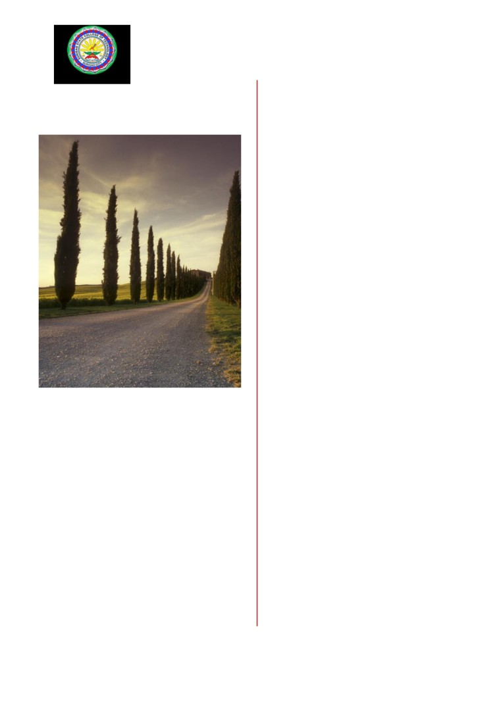
Republic of the Philippines
SURIGAO STATE COLLEGE OF TECHNOLOGY
Narciso Street, Surigao City
CONTENTS:
Module 1 - Science and the Environment
Module 2 - The Spheres of the Earth and
Environmental Systems
Module 3 - Environmental Problems / Issues
Module 4 - Environmental Worldviews and
Ethics
Module 5 - Sustainable Development and
Sustainability
LEARNI
NG
MODUL
E
GE Envi Sci Eng’g -
Environmental Science
Engineering
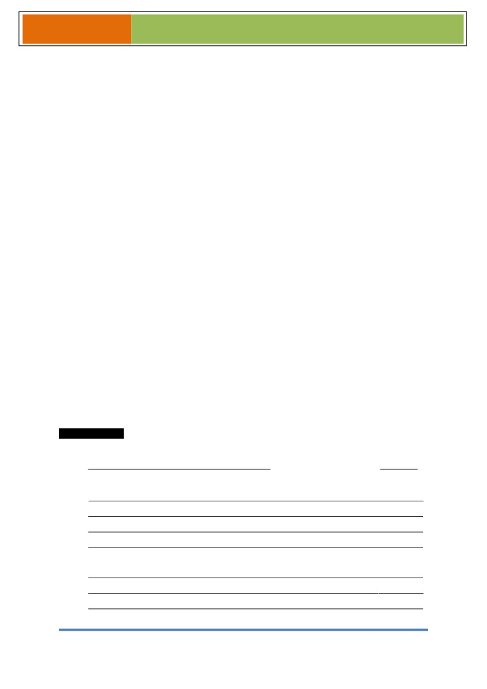
LEARNING
SURIGAO STATE COLLEGE OF
Module 1 - SCIENCE AND THE ENVIRONMENT
(By Gheleene Sering-Buenaflor)
Time Frame: 2 hours
Introduction
One of the greatest challenges since the 20th century is the deterioration of our
environment. We have become familiar with various forms of environmental problems in our
air, water, and land. Natural resources such as our forests, fisheries, and wildlife have been
greatly reduced with increase in human consumption & exploitation. Industrial processes have
resulted in pollution of our air, water bodies, and land, and some even causing health impacts.
Because of these recent issues, environmental science has developed as a separate
field of study in the recent decades. From your field of study, why is it important for you to
know about environmental science? Read along as you learn about environmental science
and its relevance to YOUR field of specialization!
Objectives:
At the end of this lesson, the students should be able to:
• describe environmental science as a discipline
• develop awareness of environmental interactions of day-to-day activities
• explain the principles of environmental science
• verbally express how environmental science is related to students’ field of study
Answer the following before proceeding to the next pages:
------cut along this line and return to your instructor when you meet face-to-face------
Pre-test
Name:
Course/Year/Section:
_
• What is environmental science?
• Can you give examples of principles of environmental science?
GS
1
GE Envi Sci Eng’g
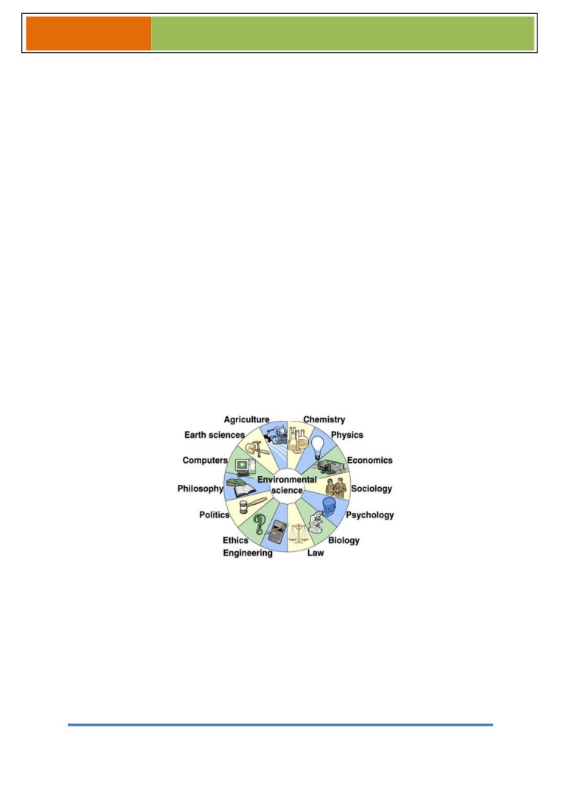
LEARNING
SURIGAO STATE COLLEGE OF
Learning Activities
A. Environmental Science as a Discipline
What is the environment? It is the totality of what surrounds us. Outside our bodies,
we have the living (biotic) component of the environment, such as plants and animals,
and the non-living (abiotic) component composed of the air, water, sunlight, land, etc. Of
course, these components interact with each other. For example, birds
(biotic
component), fly through the air (abiotic component). Microorganisms (biotic component)
live within our soils (abiotic component).
Environmental Science (ES) is the “systematic study of our environment and our place
in it” (Cunningham & Cunningham, 2013). ES is an inter-disciplinary field of study of the
biological and physical sciences. By “inter-disciplinary”, it integrates concepts from the
fields of biology, chemistry, physics, mathematics, statistics, ecology, and geology,
among other scientific fields, in order to analyze and solve problems concerning our
environment (Figure 1).
Figure 1
Field of Environmental Science
Note. Environmental science as an interdisciplinary
field. From Introduction to Environmental Science. Ch
1 Science & The Environment 1 Understanding Our
Environment 2 The Environment and Society, by A.
Flowers, n.d. Copyright by The McGraw-Hill
Companies, Inc.
GS
2
GE Envi Sci Eng’g
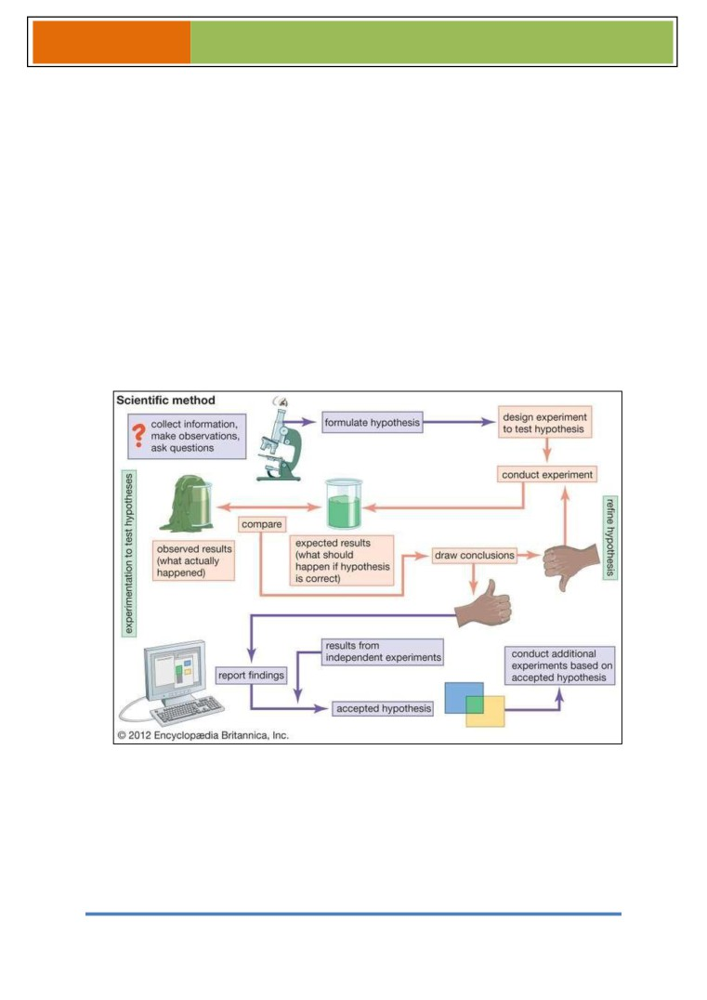
LEARNING
SURIGAO STATE COLLEGE OF
As a science, ES is a study of connections in nature. It makes use of the scientific
method (Figure 2) in understanding the processes and systems in our environment. ES
utilizes the other scientific fields mentioned above to study environmental problems and
the impacts of human activities on the environment. Another definition is, that
environmental science is the study of interactions between humans and the environment.
ES is a relatively new field of science which came out of the environmental movement in
the 1960’s as environmental issues such as oil spills, release of environmental toxins and
chemicals, and deforestation surfaced. Among the major influences to the growing
environmental awareness during those decades were the books of Rachel Carson (“Silent
Spring”, 1968) and Paul R. Ehrlich (“The Population Bomb”, 1968).
Figure 2
The Scientific Method
Note. The Editors of Encyclopaedia Britannica. (2020). Scientific method. In Encyclopedia
method
GS
3
GE Envi Sci Eng’g
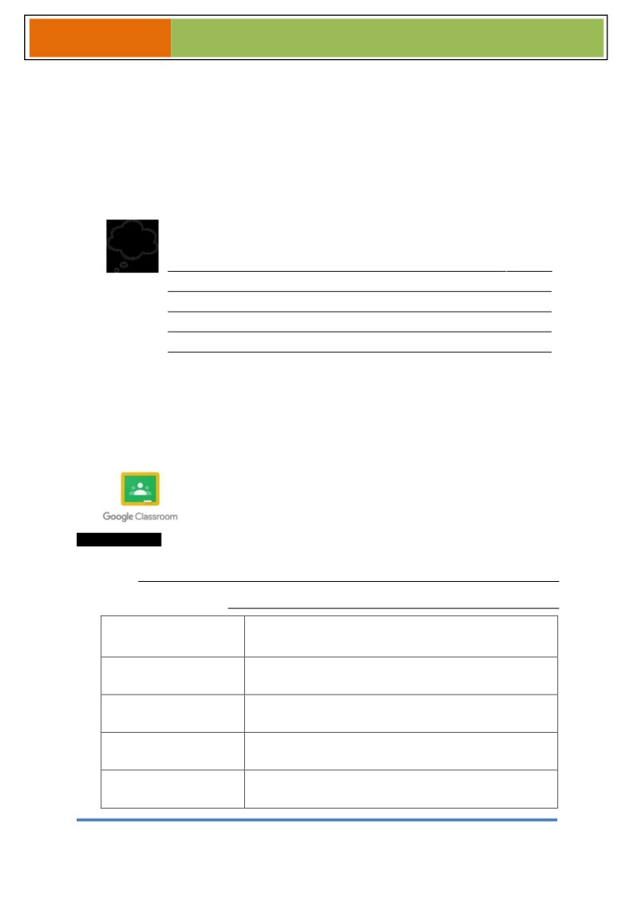
LEARNING
SURIGAO STATE COLLEGE OF
Why do we need to study environmental science, not just the separate fields of the
sciences? Well, environmental problems such as air and water pollution cannot be
analyzed and solved solely by using one field of science. For example, you need to know
the nature of the pollutant (its composition and characteristics) - that’s chemistry! How
fast does the pollutant flow? - that’s physics! What organisms are affected by the
pollution? -that’s biology! And so on and so forth.
Pause and ponder:
What environmental problems are you aware of? Give some examples.
Environmental science is an applied science that gives attention to understanding and
solving environmental challenges that our world is facing. Since almost all of our activities
interact with our environment, we need to know and understand how we affect our
environment in our day-to-day activities. Can you list some examples below?
Classwork: Smile! Take a photo of yourself holding your answers below.
Write legibly using dark ink. Upload your photo in Google Classroom
(see “Classwork” in Google Classroom)
-----------------------------------------------------------------------------------------------------------------------
Name:
Course / Year / Section:
Environmental
What activities in your day-to-day life interact with
component
these environmental components?
AIR
WATER
LAND
BIOTA
(PLANTS & ANIMALS)
GS
4
GE Envi Sci Eng’g
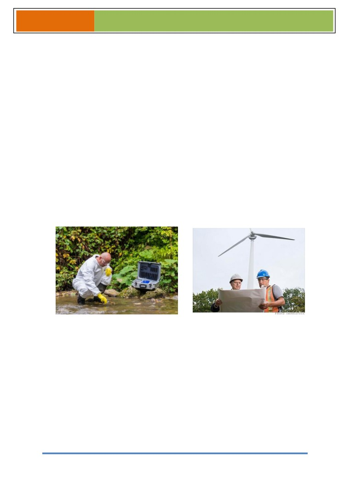
LEARNING
SURIGAO STATE COLLEGE OF
Environmental science is related, but different, from the fields of environmental
engineering, environmental management, and environmental studies. ES is a scientific
inquiry into understanding the environment and environmental problems. Environmental
engineering is an applied field to design and use technology to improve environmental
quality, while environmental management is focused on planning and making policies
to manage our environment. In contrast, environmental studies is more social-science
oriented and deals with how humans interact with the environment. For example,
environmental engineers would want to develop technologies that will help solve water
pollution; environmental managers might be involved in making policies that would
lessen discharge of pollutants to a river. Environmental studies practitioners would be
interested on how citizens view pollution in their community, while environmental
scientists would be quantifying the pollutants in river and simulating their movement in
the environment through environmental modeling (Figure 3).
Figure 3
Occupations related to environmental science
Note. Top left: an environmental scientist obtaining a water sample from a stream; right:
environmental engineers looking at a plan related to clean energy with windmill on the
background. From The Newest Gold Mining Tool: Bacteria, by C. Calam, 2018,
Environmental Engineer, by CNN Money,
GS
5
GE Envi Sci Eng’g
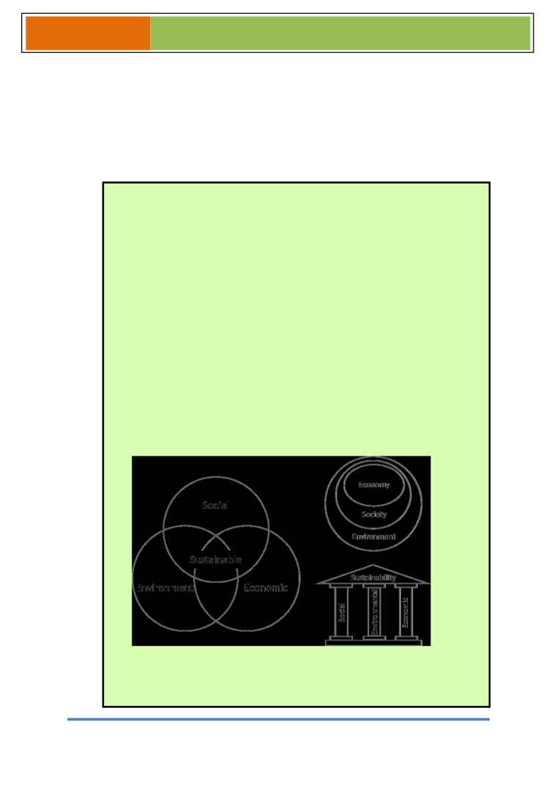
LEARNING
SURIGAO STATE COLLEGE OF
B.
Environmental Science Principles (excerpts from Boersema & Reijnders (2009)
1.
The Principle of Sustainable Development
This principle states that “we humans must move towards the adoption of a
lifestyle that can continue indefinitely.” Simply, we must stop destroying the very
necessities of our own existence. Our present lifestyle cannot continue indefinitely (is
not sustainable).
Perhaps the most popular definition of sustainable development is the one
contained in the report “Our Common Future” (a.k.a. Brundtland Report)
released by the United Nations World Commission on Environment and
Development in 1987:
“Sustainable development
is development that meets the needs of the present
without compromising the ability of future generations
to meet their own needs.”
Sustainable development is a goal composed of three pillars: economy,
society, and environment. These
three interdependent pillars must be
balanced as shown in Figure 4:
Figure 4
The Pillars of Sustainability.
Note. From Purvis, B., Mao, Y., & Robinson, D. (2019). Three pillars of
sustainability: In search of conceptual origins. Sustainability Science, 14(3),
GS
6
GE Envi Sci Eng’g
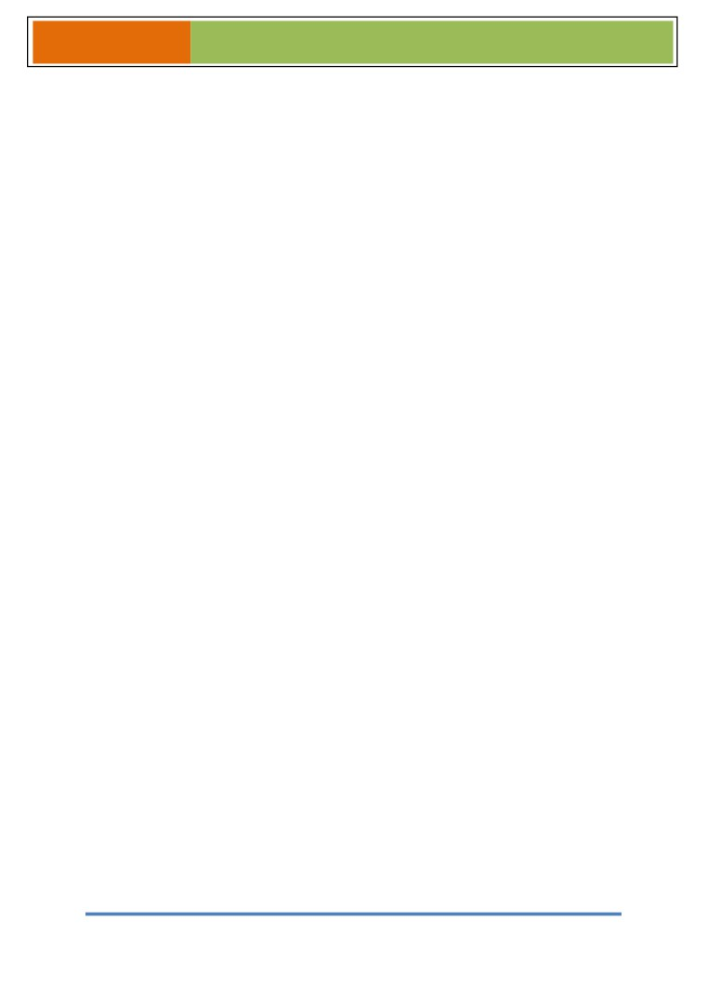
LEARNING
SURIGAO STATE COLLEGE OF
2.
The Principle of the Conservation of Energy (First Law of Thermodynamics)
Quantity of energy is constant: energy can be neither created nor destroyed, but
only transformed.
3.
The Principle E=MC2 (energy equals mass times the speed of light squared)
The aspect of this principle that is important for environmental science is that
matter is a form of energy.
4.
The Principle of the Conservation of Matter
Quantity of matter is constant: energy cannot be transformed from a material form
to a non-material form or vice versa. Matter can change from being in a state of high
potential energy to being in one of low potential energy, but the total amount of matter
in both states is the same.
5.
The Entropy Principle (Second Law of Thermodynamics)
This may be expressed in terms of systems (see box on the following page):
systems tend towards disorder (the amount of entropy in a system tends to increase);
or the degree of ‘organization’ of matter in a system will tend to decrease. In
environmental science, this means that whatever concentrations of energy or
chemical elements presently existing on earth will tend to lessen over time. There will
be a day when humans cannot use fossil fuels, uranium or metals, when the amount
of usable energy needed to extract them exceeds the amount of usable energy they
provide.
6.
The Principle of Evolution through natural selection
“Life forms on earth have evolved from a common source, each surviving as a
species as a result of its being genetically adapted to its biological and physical
environment.” The principle of sustainable development aims to lead us to a stable
relationship with our environment as a prerequisite for our continued existence.
The following must hold true if there is to be evolution by a variational mechanism:
• variation. Individual variety in morphology, physiology, and behavior within
populations.
• heredity. Similarities among offspring with their parents more than non-relatives.
• selection. Chances of survival and reproduction in certain environments varies
with different forms.
GS
7
GE Envi Sci Eng’g
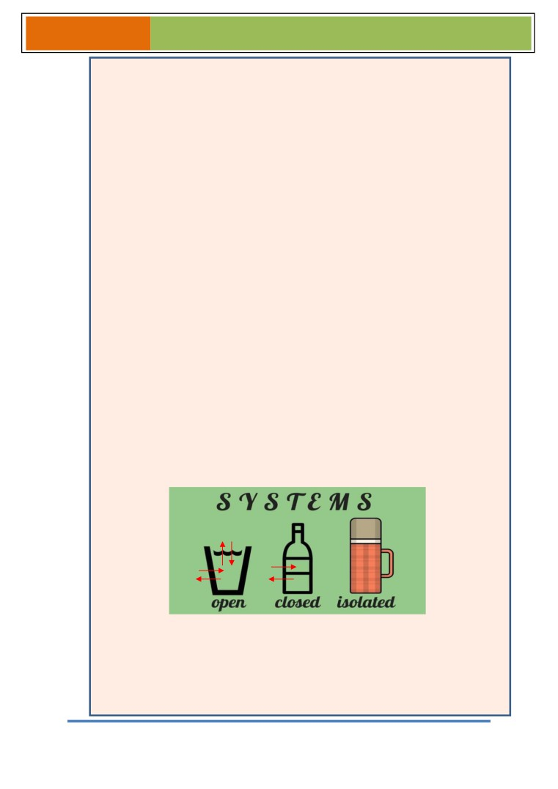
LEARNING
SURIGAO STATE COLLEGE OF
The Notion of a System
A system is any group of entities with an ongoing cause-and-effect relationship
which gives the system its structure and determines how it is organized. If the
processes in a system do not lead to organizational change, the system is in a state
of equilibrium. When there is structural change, the equilibrium is dynamic; when there
is none, it is static. A system is out of equilibrium when it has earlier experienced static
equilibrium and is in the process of failing to exhibit dynamic equilibrium, before there
is a change in its organization (after which it is no longer the same system).
Loss of dynamic equilibrium in individuals as systems results in death; in species,
this results in their extinction. In ecosystems, however, the distinction is not so clear.
If a tropical forest becomes a semi-arid desert, the dynamic equilibrium of the original
system has been lost - and so there has been system change - even if some of the
original species remain. In ecosystems, the loss of a system can be avoided despite
loss of equilibrium due to their ability to regenerate. Unlike physical systems,
ecosystems tend to decrease in entropy, thanks to solar energy.
Other important systems notions are those of open, closed, and isolated systems.
The solar system is an open system, taking in matter and energy from outside, as well
as giving off solar energy to the outside. In a closed system, matter neither enters nor
leaves; and in an isolated system, energy neither enters nor leaves.
Figure 5
Illustration of an Open, Closed and Isolated System.
water
vapor
energy
energy
Note. Modified from Baker’s Environmental Systems &
Societies Class. (2015, September 21). Environmental
Systems & Societies: Open, Closed and Isolated Systems.
Environmental
Systems
&
Societies.
isolated-systems.html
GS
8
GE Envi Sci Eng’g
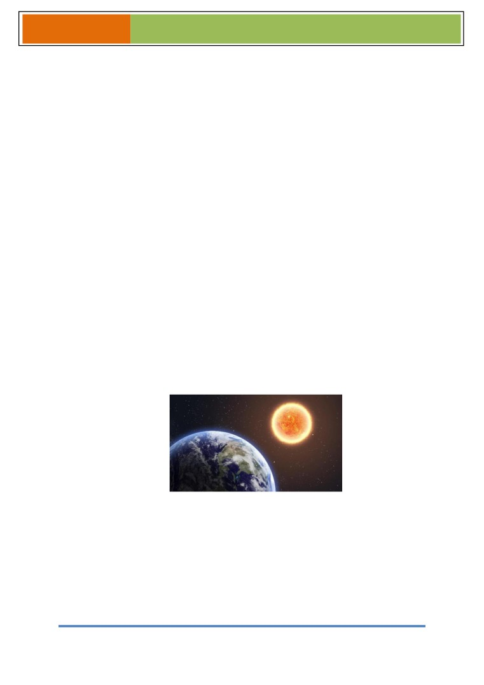
LEARNING
SURIGAO STATE COLLEGE OF
7.
The Principle of Ecology
“Various groupings of living beings constitute systems, each of which may or may
not be in equilibrium with the other systems constituting its environment.”
The systems with which the human species interacts are physical and biological.
Examples of biological systems in living beings are DNA strands, cells, and organs.
Individual living beings such as plants and animals are also biological systems. And
populations of living beings constitute systems, which are subsystems of even larger
systems, namely ecosystems. Eventually we get to the largest ecosystem, the
biosphere, which has all other biological systems as subsystems.
The existence of each species, like the existence of the biosphere as a whole, is
dependent on solar energy (Figure 6). In terms of systems, the maintenance of the
population of each species as a system requires an influx of solar energy to
(temporarily) counteract the effects of the entropy principle. In the case of plants this
input is at least partly direct, via photosynthesis. For humans and other animals, it
consists in taking usable energy from other material (biological and physical) systems,
thereby increasing their entropy - in accordance with the entropy principle.
Figure 6
The Earth receiving energy from the sun.
Note. Solar energy is needed to maintain
plant and animal populations. From “Is the
Distance from the Earth to the Sun Always
the
Same?”,
K.
Bryant,
2019,
earth-to-sun/
GS
9
GE Envi Sci Eng’g
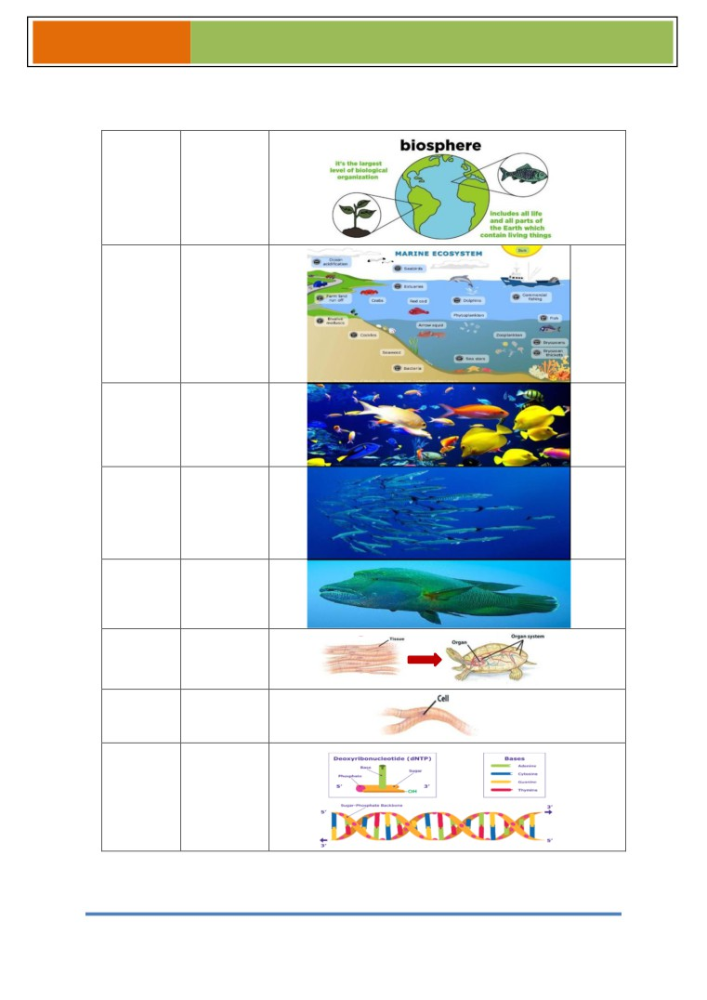
LEARNING
SURIGAO STATE COLLEGE OF
Figure 7
Levels of Ecological Organization.
Biosphere
The part of
the Earth
that contains
all
ecosystems
Ecosystem
Community
and its
nonliving
surroundings
Community
Populations
that live
together in a
defined area
Population
Group of
organisms
that live in
the same
area
Organism
Individual
living thing
Groups of
Tissues,
cells
organs, and
organ
systems
Cells
Smallest
functional
unit of life
Molecules
Groups of
atoms;
smallest unit
of most
chemical
compounds
Note. Adapted from C4: Ecosystems & Communities, by B. Allison,
GE Envi Sci Eng’g
GS
10
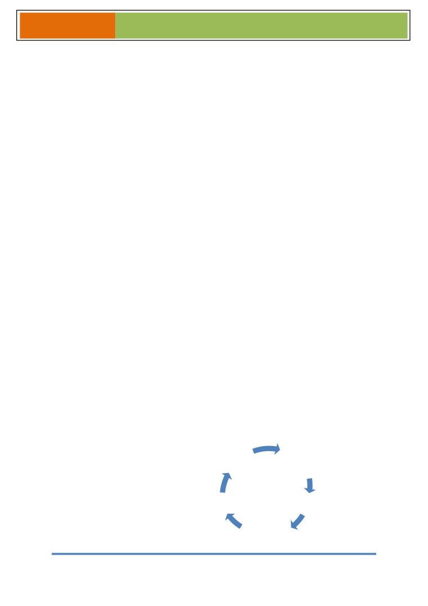
LEARNING
SURIGAO STATE COLLEGE OF
As compared with physical systems, systems involving living beings are
exceedingly complex. Nevertheless, limits can be set on what behavior is possible,
thanks to the principles being presented here. For example, the entropy principle
makes it impossible for a sustainable society to continue using a finite resource
indefinitely. Another difference between populations of living systems and purely
physical systems, as taken up in the previous section, is that each living system tends
to increase, not decrease, in its degree of organization.
Living systems could be physically defined as open systems in which entropy
tends to decrease. Against the background of the entropy law, this means that living
systems must exist in larger physical systems in which the total entropy is increasing.
This energy-accumulating aspect of life lies behind the principle of population.
8.
The Principle of Population
a.
“There is a tendency for the human population (and that of any species) to be as
large as its environment will allow.”
b. If there were no checks to population size, that of the human (or any) population
would tend to increase indefinitely.
Nonhuman populations tend to increase and decrease in cycles. The greater the
numbers of a species, the greater the food consumption, ultimately leading to the
population’s experiencing scarcity. This in turn requires reduced consumption, which
leads to a reduction in population size, allowing the resource to recover.
9.
The Vicious Circle Principle
“Human development consists in an accelerating movement from situations of
resource scarcity, to technological innovation, to resource increase, to increased
consumption, to population growth, and back to resource scarcity.”
Figure 8
resource
technological
scarcity
innovation
Vicious circle
of human development
population
resource
growth
increase
increased
consumption
GE Envi Sci Eng’g
GS
11
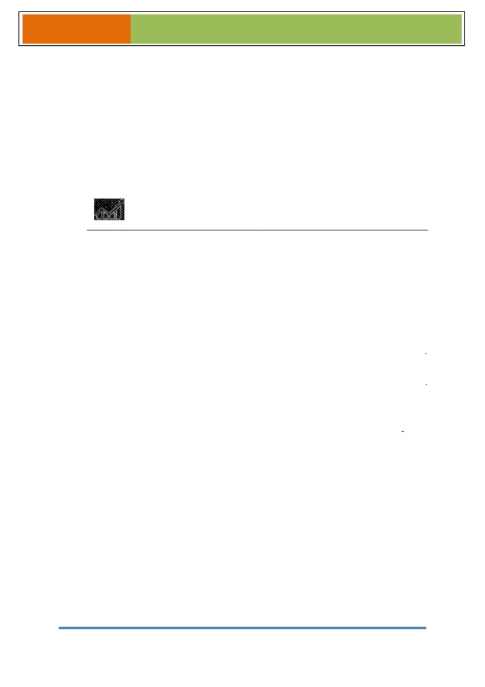
LEARNING
SURIGAO STATE COLLEGE OF
The human species is unique in sometimes reacting to resource shortage, or
threat of resource shortage, with innovative technology. But where other species have
settled down to roughly stable population sizes within certain limits (until losing
equilibrium and becoming extinct), we humans have not yet come to the point where
our population has stopped growing for the first time. We have not only been pushing
against the limits of our environment, we have constantly been stretching those limits.
In other words, the human species, as a system, has yet to attain the static equilibrium
necessary for its dynamic equilibrium even to be tested.
Latest Developments. Match the following technological innovations to the
environmental problems they address (answers on page 12)
1. Air pollution and depletion of fossil
a. smart home technology
fuels in transportation
b. “Direct Air Capture” (DAC) of CO2
2. Climate change
from the atmosphere
3. Energy wastage from appliances
c. coco bio-diesel
Supplemental learning:
• Watch
a
three-minute
video
“What
is
Sustainability?”
at
• Watch
a
four-minute
video
“Sustainability
explained”
at
• Boersema, J., & Reijnders, L. (Eds.). (2009). Chapter 7—General Principles. In
Principles of Environmental Sciences. Springer Science + Business Media B.V.
environmental-sciences1.pdf
Self-evaluation
• What is environmental science? Explain in your own words.
• Explain each of the environmental principles in your own words.
Review of Concepts
• Environmental science - a systematic study of our environment and their inter-
relationships. ES integrates the various fields of the biological and physical sciences
in understanding how our environment works and in analyzing environmental
problems.
GE Envi Sci Eng’g
GS
12
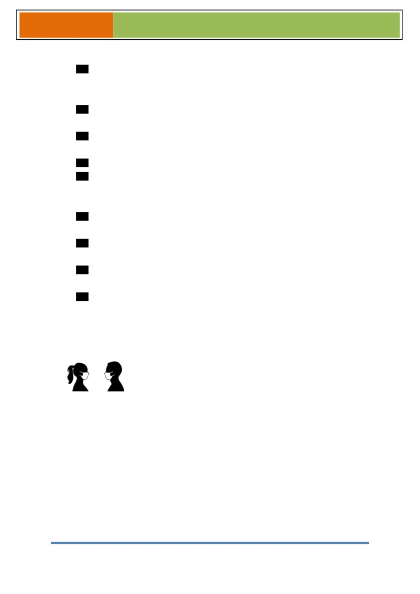
LEARNING
SURIGAO STATE COLLEGE OF
•
Principles of environmental science:
Sustainable development - we must pursue lifestyles that can support the needs
of both the present and future generations. It has 3 pillars: society, environment
and economy.
Conservation of Energy (First Law of Thermodynamics) - Quantity of energy is
constant: energy can be neither created nor destroyed, but only transformed.
E=MC2 (energy equals mass times the speed of light squared) - matter is a
form of energy
Conservation of Matter - Quantity of matter is constant
Entropy Principle (Second Law of Thermodynamics) - systems tend towards
disorder; or, the amount of entropy in a system tends to increase. In other words,
the quality of the energy in a system tends to decline.
Evolution - Adaptation to biological and physical environment is necessary for
continued existence of species
Ecology - The environment is composed of various levels of systems such as
individuals, populations, communities, ecosystems, and the biosphere.
Population - Populations tend to increase as its environment will allow and would
tend to increase indefinitely if there were no checks to population size.
Vicious circle - human development consists in an accelerating movement from
situations of resource scarcity, to technological innovation, to resource increase, to
increased consumption, to population growth, and back to resource scarcity
Post-test
1. Quiz and oral recitation during face-to-face meeting
References
Allison,
B.
(n.d.)
C4:
Ecosystems
&
Communities.
Boersema, J., & Reijnders, L. (Eds.). (2009). Principles of Environmental Sciences.
Springer
Science
+
Business
Media
B.V.
environmental-sciences1.pdf
GE Envi Sci Eng’g
GS
13
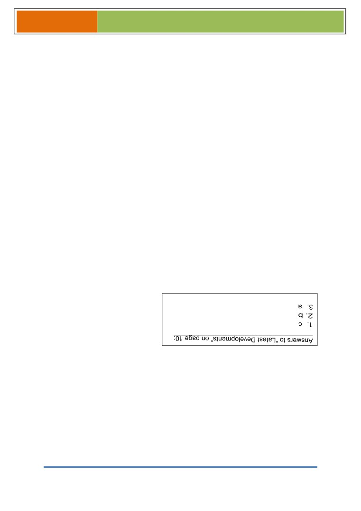
LEARNING
SURIGAO STATE COLLEGE OF
Calam, C. (2018, January 23). The Newest Gold Mining Tool: Bacteria. ThermoFisher
Scientific.
bacteria/
Cunningham, W. P., & Cunningham, M. A. (2013). Environmental Science: Inquiry &
Application (7th ed.). McGraw-Hill.
Das, G. S. (2015). Environmental Science: A Global Concern. Random Publications.
Environmental science. (2018). In Encyclopedia Britannica. Encyclopædia Britannica,
Flowers, A.
(n.d.). Introduction to Environmental Science. Ch
1 Science & The
Environment 1 Understanding Our Environment 2 The Environment and Society. - Ppt
Griffiths, A. J., Gelbart, W. M., Miller, J. H., & Lewontin, R. C. (1999). Darwin’s Revolution.
Sustainability explained
(explainity® explainer video).
(2012, July
25)
The Editors of Encyclopaedia Britannica. (2020). Scientific method. In Encyclopedia
Britannica.
Encyclopædia
Britannica,
Inc.
Tyler Miller, G., & Spoolman, S. (2018). Living in the Environment. Cengage Learning.
What is Sustainability? | Mocomi Kids. (2013, May 8).
GE Envi Sci Eng’g
GS
14